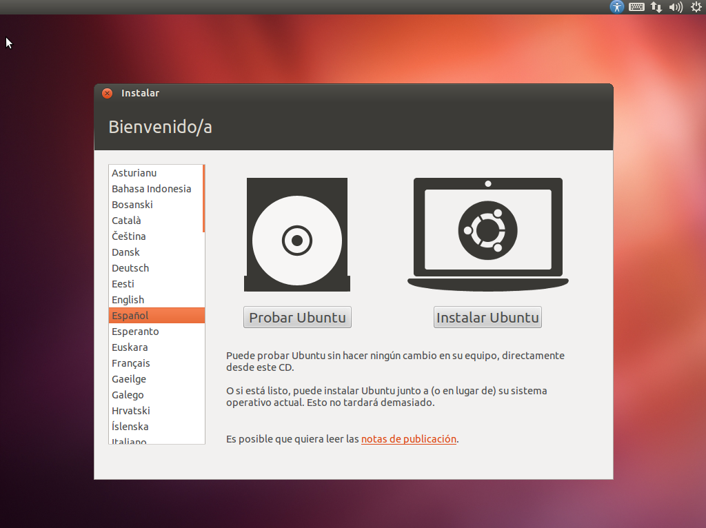
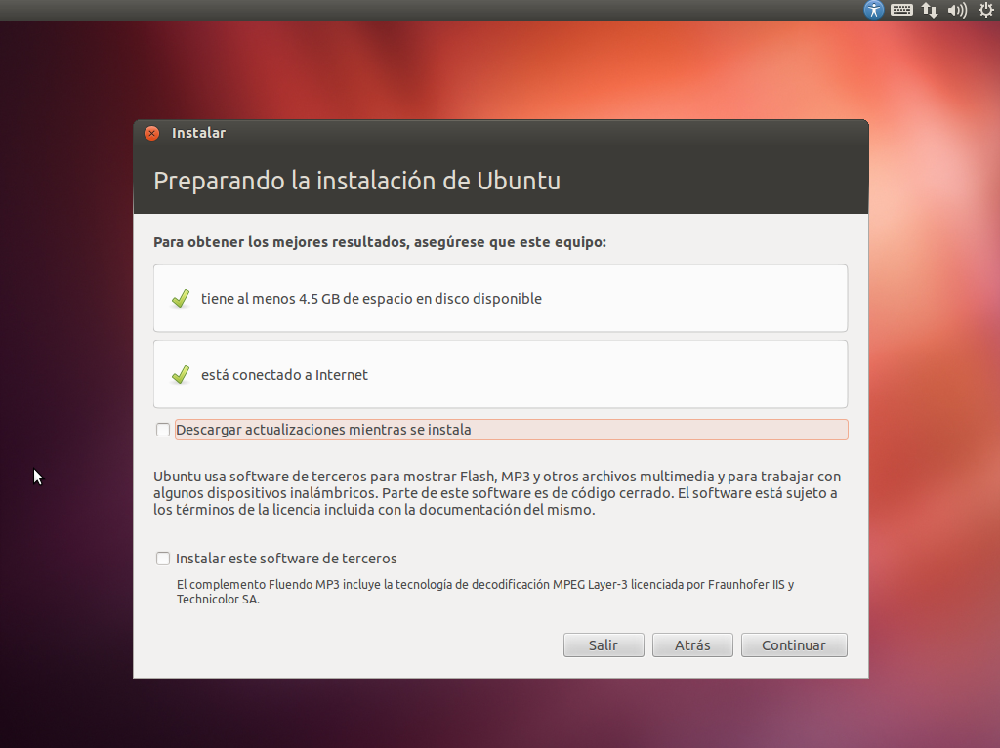
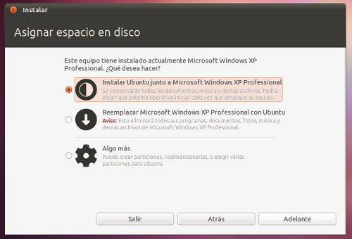
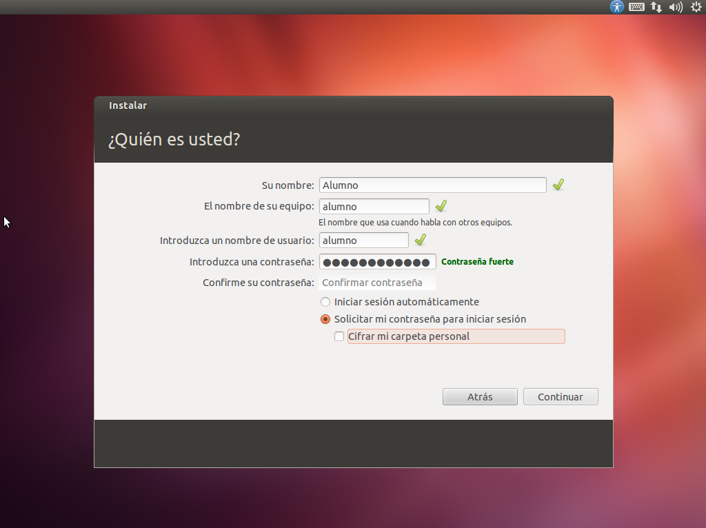

Accedemos a la página de descarga de Ubuntu pulsando aquí y seleccionamos el sistema de 64 bits y a continuación pulsamos sobre “Start Download”. Acto seguido, se empezará a bajar a nuestro equipo una imagen ISO con Ubuntu Linux.
Una vez descargado el archivo ISO, tenemos dos opciones: grabarlo e instalarlo desde un CD/DVD o hacerlo de un pendrive de por lo menos 2GB, por lo que necesitaremos un software que se ejecuta desde Windows y se llama Universal USB Installer que podemos descargar desde aquí. En esta guia explicaremos el procedimiento para la instalacion a través de una memoria USB.
Ejecutamos la aplicacion Universal USB Installer y seleccionamos en el Paso 1 la distribucion Ubuntu 12.04 Desktop, en el Paso 2 elegimos la ubicación del archivo ISO que nos hemos bajado anteriormente y en el Paso 3 seleccionamos la letra de la unidad USB (IMPORTANTE: ¡¡SE BORRARÁN TODOS LOS DATOS!!) y pinchamos en “Create”:
SEGUNDO PASO

Una vez finalizado el proceso, extraemos de forma segura la unidad USB y apagamos el portátil.
Conectamos la unidad USB al portátil de préstamo y lo encendemos.
En cuanto aparezca el logotipo de Acer pulsamos F12 y cuando aparezca el menú de arranque elegimos la unidad USB.
La instalación de Linux comenzara automáticamente.
A continuación, seleccionamos el idioma Español o en su defecto, el que prefiramos para el sistema operativo y pulsamos sobre “Instalar”.
TERCER PASO

Durante la instalación, es posible que tengamos la opción de tener el portátil conectado a Internet para que se baje los paquetes mas actualizados. Si tenemos esta posibilidad, Ubuntu lo detectará automáticamente y tendremos la opción de pulsar sobre “Descargar actualizaciones mientras se instala”. Tambien podemos instalar software de terceros (por ejemplo, para reproducir archivos de sonido MP3) pero esta opción ya queda a la elección del usuario, que dependiendo de su filosofia, elegirá una opción u otra. Despues de elegir las opciones que mas nos interesen, pulsamos sobre “Continuar”.
CUARTO PASO

Como supuestamente hemos instalado Windows antes de instalar Linux, deberiamos tener un espacio sin particionar, por lo que elegiremos la opción de “Instalar Ubuntu junto a Microsoft Windows”. El resto de opciones son para usuarios avanzados. Una vez seleccionada la opción deseada, pulsamos sobre “Continuar”.
QUINTO PASO

A continuación, se pondrá a instalar la distribución de Linux, y mientras instala nos va a pedir que introduzcamos nuestra ciudad (Madrid), y datos como nuestro nombre, nombre de equipo, contraseña, etc… que iremos rellenando segun nos lo vaya pidiendo.
Una vez finalizado todos estos pasos ya tenemos instalado Ubuntu instalado junto a Windows y en el siguiente arranque, antes de iniciar cualquier sistema operativo, nos saldrá un menú para que seleccionemos el sistema operativo con el que queremos arrancar el portatil.